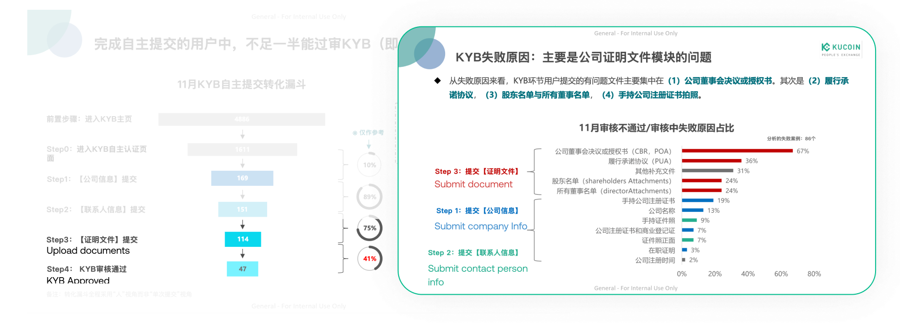
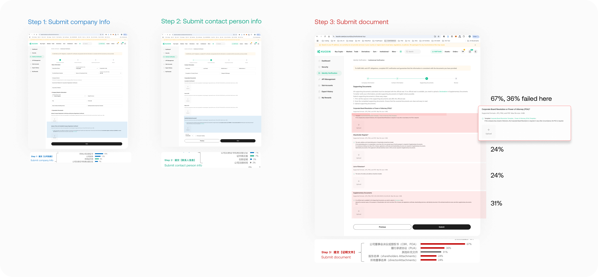
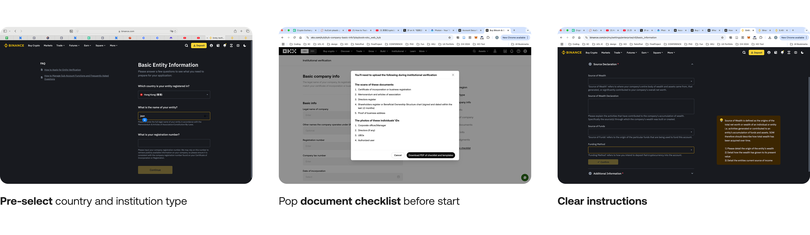
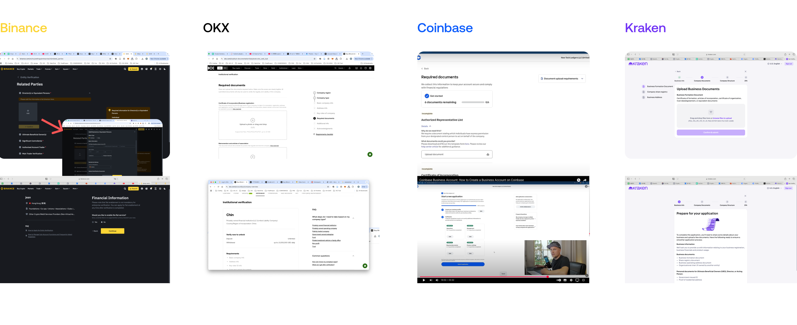
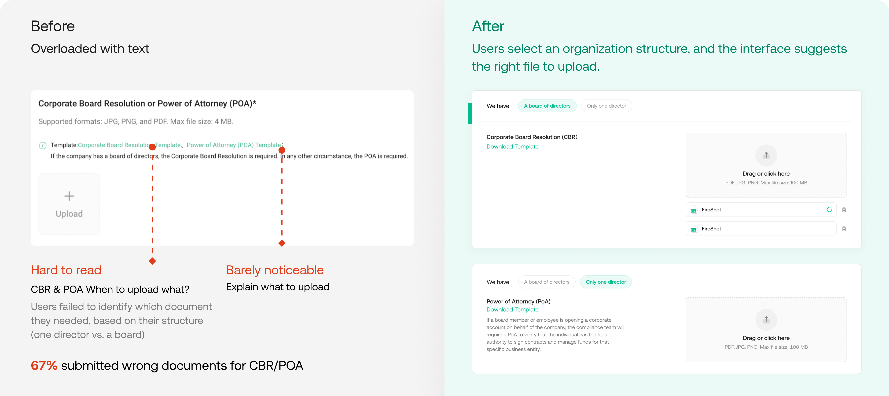
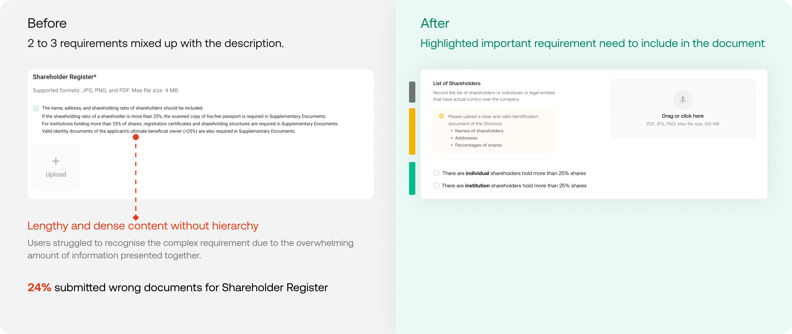
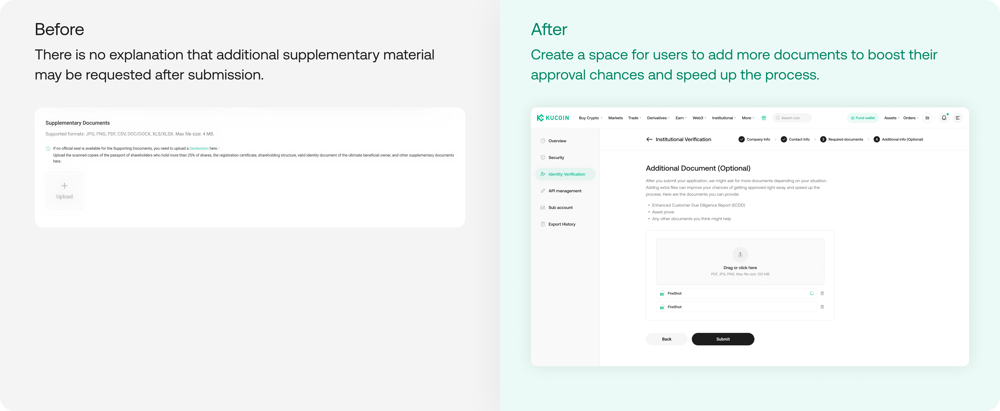
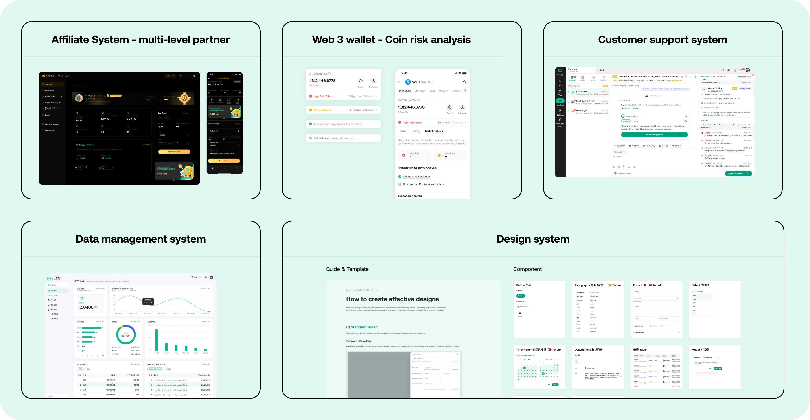

Intro
· Institutional clients contribute 30% to 70% of trading volume on crypto exchanges.
· Institutional verification is crucial for organizations to prove their legitimacy. Once verified, they can access higher deposit limits and larger withdrawals, enhancing their trading capabilities.
· User research indicates low conversion rates in the KYB verification step due to unclear instructions.
Data-driven insight
KYB failed reason: file uploading is lack of clarity and guidance.
· User research indicates that 82% of users submitted multiple applications, with approximately 40% taking more than 5 days to complete their Know Your Business (KYB) processes.
· The conversion rate for document uploads is notably low at 41%, primarily because users are often confused about which materials to upload in various scenarios. The previous design failed to provide the necessary clarity and guidance.

Current design: text-heavy
Users had to read through lengthy text instructions to understand what documents were required. This approach was not user-friendly and led to frustration.

Competitor Analysis
Key takeway:
· Pre-select country and institution type to show relevant files.
· Provide a document checklist upfront to help users gather materials efficiently.
· Include straightforward instructions for uploading files.


Key Iterations
1. Replaced the text reading with guided selection.

2. Established a visual hierarchy.

3. Added an additional section for uploads to increase the chances of success.

Final

Other work at KC
